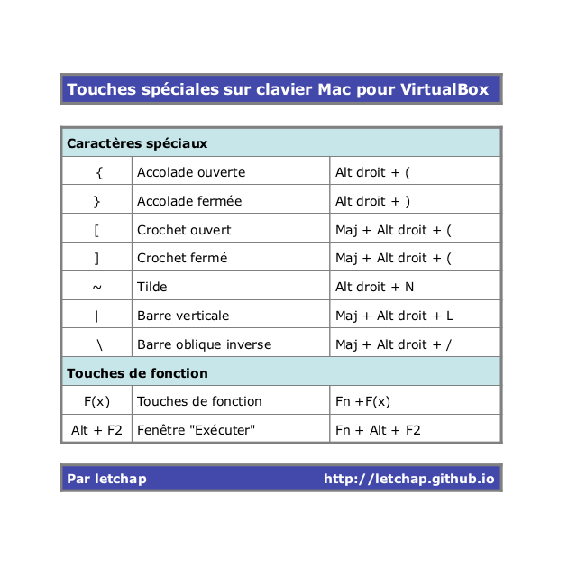

Touches spéciales clavier Mac sur VirtualBox
Jeu 20 juin 2013
VirtualBox
Pour pouvoir profiter pleinement d'une distribution Linux virtualisée grâce à VirtualBox sur une ordinateur Mac, il faut pouvoir retrouver les touches spéciales qui, sans cela, rendent compliqué l'utilisation du terminal ou des éditeurs de texte.
J'ai donc remis tout çà dans une petit tableau disponible au téléchargement ici.

Pour les touches début et fin, il n'existe pas vraiment d'équivalent. Il est néanmoins possible de faire :
- Début de ligne : Fn + flèche gauche (ça ne fonctionne pas avec tous les éditeurs de texte)
- Fin de ligne : Fn + flèche droite
- Page up : Fn + flèche haute
- Page down : Fn + flèche basse